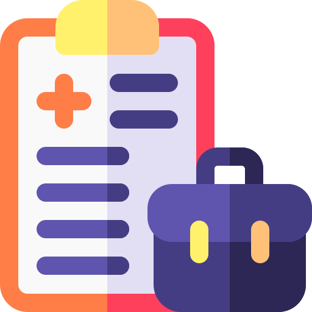
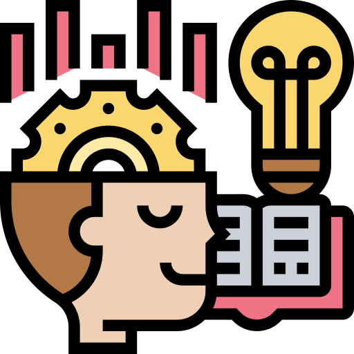

Mis comienzos
Soy Aldo Zunino, Desarrollador Backend Trainee.
Iniciando en el mundo de la programación y el desarrollo web.
Como destaca mi perfil, tengo amplia experiencia en atención al público en sistemas de salud de los cuáles tuve la oportunidad de desarrollar diversas aptitudes tanto el campo laboral como en el personal; como la proactividad, la capacidad de ser autodidacta, la orientación al cumplimiento de objetivos, la gran capacidad de trabajo en equipo, la organización eficiente del tiempo y la correcta gestión de herramientas de trabajo, el manejo de situaciones conflictivas, entre otras.

Sin embargo, decidí dan un salto de fe e iniciarme en el mundo de la programación, como desarrollador web con orientación hacia el Back-end, al cual estoy muy seguro de que mis aptitudes previamente formadas pueden coaptar mis conocimientos informáticos para lograr brindar el 100% de mi capacidad en cada tarea a realizar.
Con un historial de esfuerzo, dinamismo y proactividad, una de las capacidades que siempre destaco de mi mismo es mi gigantesco entusiasmo por aprender cada día un poco más y formar fuertes lazos laborales que faciliten la colaboración en conjunto para alcanzar metas comunes.
